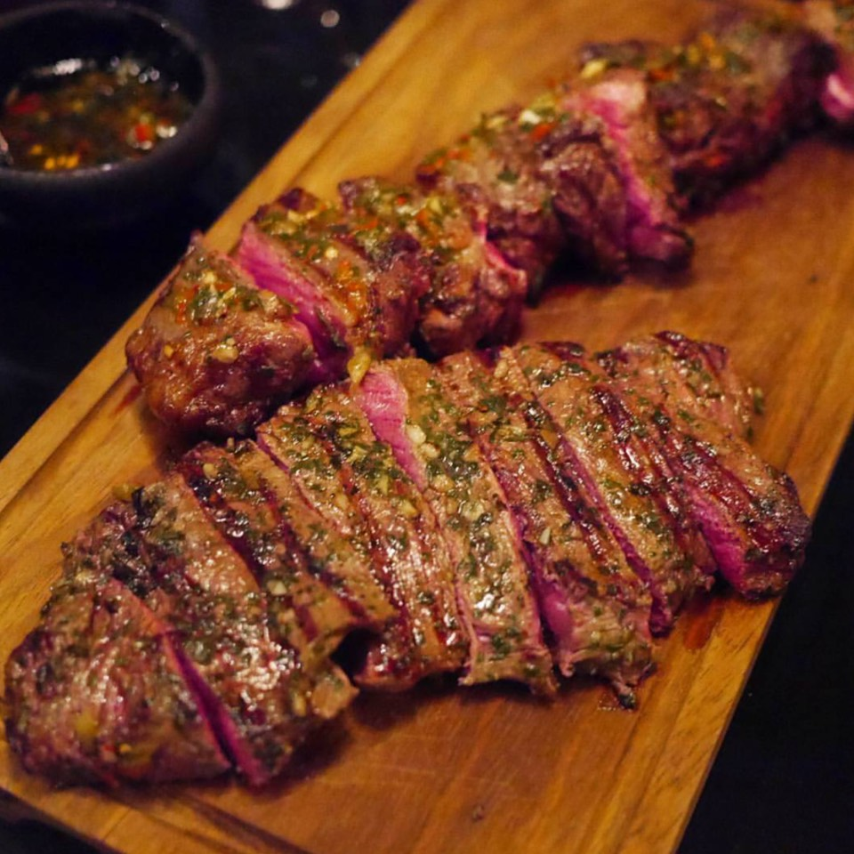

Churrasco Gaúcho
Sobre a Receita
Churrasco Gaúcho — prato tradicional preparado com carnes selecionadas assadas na brasa, temperadas apenas com sal grosso e servidas com farofa, pão e saladas. Uma verdadeira celebração da cultura e do sabor do Rio Grande do Sul.

🧾 Ingredientes
- 1,5 kg de carne bovina (como picanha, costela, alcatra ou maminha)
- Sal grosso a gosto
- Linguiça toscana (opcional)
- Coração de frango (opcional)
- Pão de alho (para acompanhar)
- Carvão para o braseiro
- 2 tomates picados
- 1 cebola picada
- 3 colheres (sopa) de vinagre
- 2 colheres (sopa) de azeite
- Sal e pimenta a gosto
- 2 xícaras de farinha de mandioca
- 2 colheres (sopa) de manteiga ou azeite
- 1 cebola picada
- 2 dentes de alho picados
- Sal e cheiro-verde a gosto
👨🍳 Modo de Preparo
- Carnes: tempere as peças com sal grosso e leve à grelha sobre o braseiro médio. Asse lentamente, virando de tempos em tempos até ficarem douradas e suculentas. Corte em fatias e reserve.
- Farofa: em uma frigideira, aqueça a manteiga, refogue a cebola e o alho até dourar. Acrescente a farinha de mandioca e mexa até ficar crocante. Finalize com sal e cheiro-verde a gosto.
- Vinagrete: misture o tomate, a cebola e o pimentão em um recipiente. Tempere com vinagre, azeite, sal e pimenta, mexendo bem até incorporar os sabores.
- Sirva o churrasco acompanhado da farofa, vinagrete e pão de alho para completar essa tradicional refeição gaúcha.
⏱️ Preparo
20 minutos
🔥 Tempo de Assar
40 a 60 minutos (dependendo do tipo e ponto da carne)
🕒 Total
aproximadamente 1 hora e 20 minutos
🍘 Rendimento
cerca de 6 a 8 pessoas
💰 Custo Médio
aproximadamente R$ 100 a R$ 450